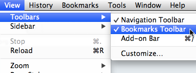
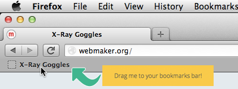

Copy this URL to your clipboard.
Activate X-Ray Goggles by clicking the button above.
Click on the image below, then make it point to the URL you just copied.
Mess around with the rest of the page!
When you're ready to share your remixed page, click the Publish button or press P on your keyboard.
With X-Ray Goggles activated, press H for help.
You can take X-Ray Goggles with you anywhere on the web! Just install it in two easy steps.
Make sure your browser's bookmarks bar is enabled.

Drag the yellow button above into your bookmarks bar.
